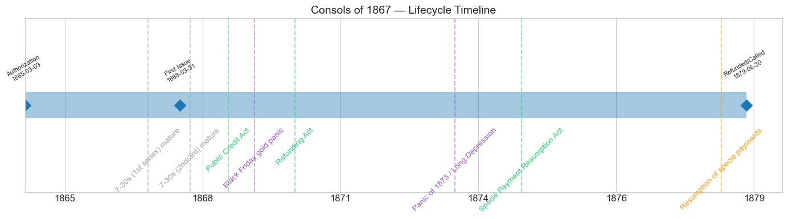
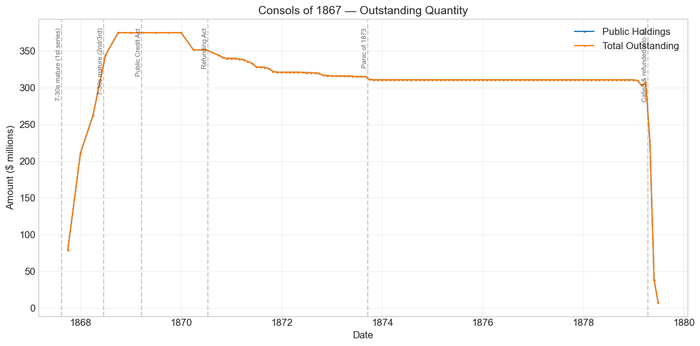
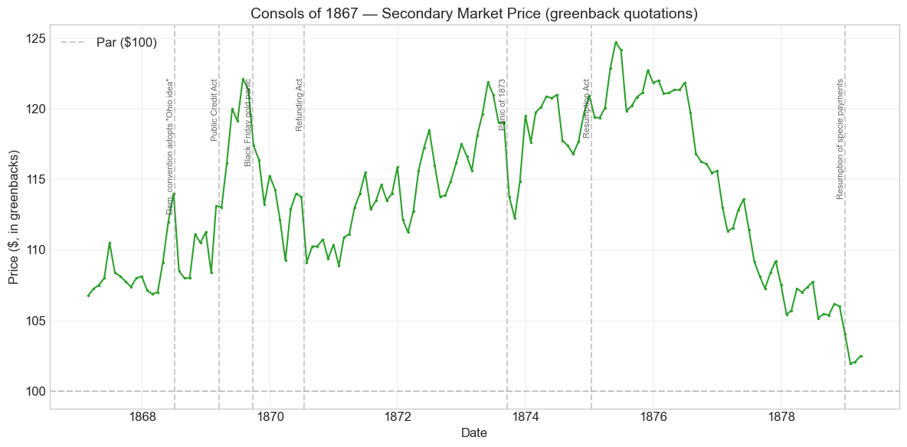
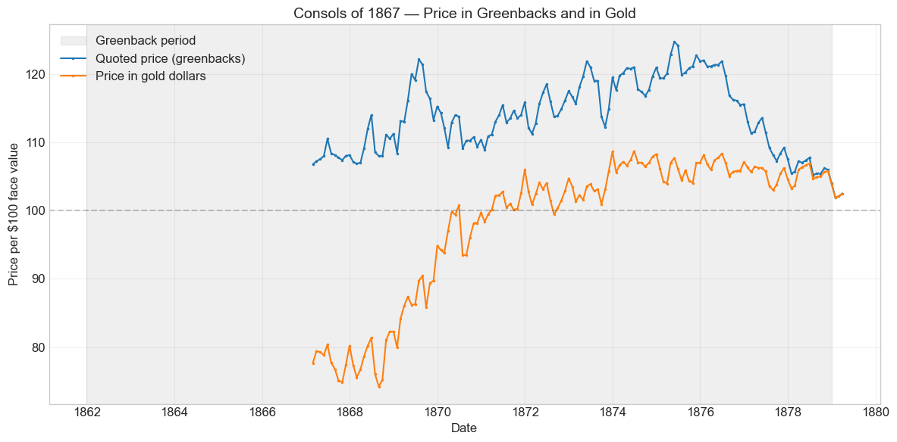
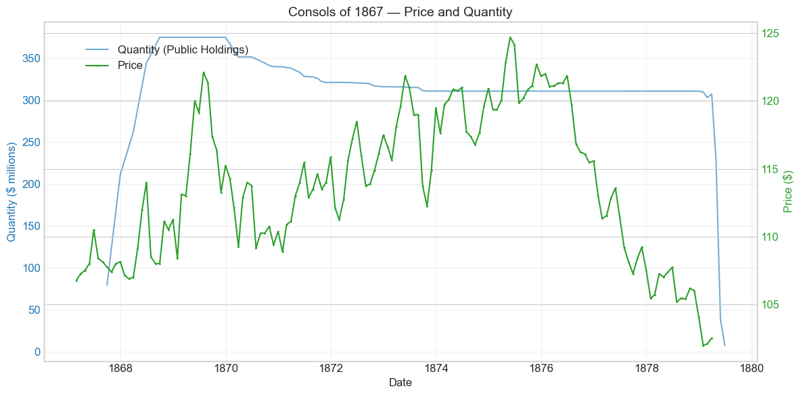
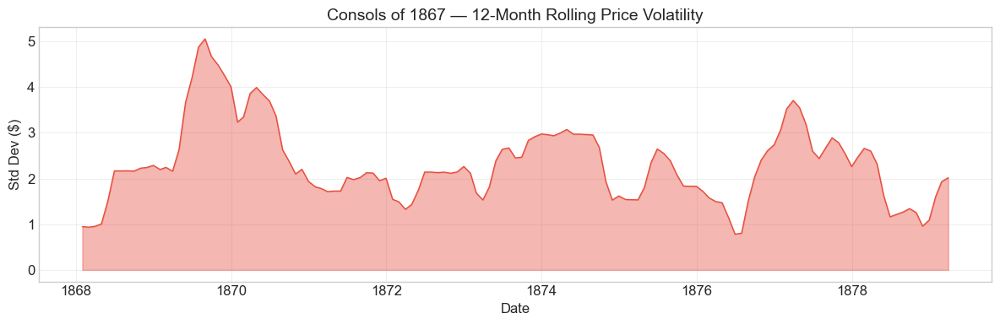

Bond Biography: Consols of 1867#
The Great Conversion: How America Funded Its Floating Debt#
Enhanced from the Hall-Payne-Sargent US Federal Bond Database (2,857 issues, 1776–1960)
Bond ID (L1): 20115 Category: Interest Bearing > Marketable > Long Term Bond Coupon: 6% semi-annual, payable in coin Term: 5-year call / 20-year maturity (“five-twenty”) Authorization: Act of March 3, 1865
The Consols of 1867 were not sold to the public in the ordinary sense at all. They were, overwhelmingly, the funded form of debt the public already held — the bond into which the great wave of maturing seven-thirty Treasury notes was converted in 1867 and 1868. At a peak of $374.9 million outstanding, they were the largest of the three “consol” series created under the Act of March 3, 1865, and one of the largest single funded issues of the nineteenth century.
Data note. Quotations from the start of the series to December 1878 are prices in greenbacks, while the coupons of these bonds (and, after the Public Credit Act of 18 March 1869, their principal) were payable in coin. Price movements before resumption therefore mix the gold premium with credit news.
import pandas as pd
import numpy as np
import matplotlib.pyplot as plt
import matplotlib.patches as mpatches
import datetime
import warnings
warnings.filterwarnings('ignore')
plt.style.use('seaborn-v0_8-whitegrid')
plt.rcParams.update({'figure.figsize': (12, 6), 'font.size': 12,
'axes.titlesize': 14, 'axes.labelsize': 12})
# Load the bond database
store = pd.HDFStore('../data/BondDF.h5', mode='r')
BondList = store['BondList']
BondQuant = store['BondQuant']
BondPrice = store['BondPrice']
store.close()
BondQuant_T = BondQuant.transpose()
BondPrice_T = BondPrice.transpose()
bond_id = 20115
print(f'Loaded data for: Consols of 1867 (ID: 20115)')
/Users/thomassargent/anaconda3/lib/python3.9/site-packages/pandas/core/arrays/masked.py:60: UserWarning: Pandas requires version '1.3.6' or newer of 'bottleneck' (version '1.3.5' currently installed).
from pandas.core import (
Loaded data for: Consols of 1867 (ID: 20115)
Overview#
The Consols of 1867 were authorized under the great loan act of March 3, 1865 — the last of the Civil War’s borrowing statutes — which permitted the Treasury to borrow on six per cent five-twenty bonds and, crucially, to convert outstanding interest-bearing Treasury notes into such bonds. Three series of “Consolidated” 6% five-twenties were issued under this authority, dated 1865, 1867, and 1868. The 1867 series was by far the largest: outstanding quantity in the database climbs from \(79.1 million in September 1867** to a peak of **\)374.86 million on September 30, 1868.
During its life on the secondary market the bond’s average price was **\(113.70**, ranging from \)101.95 to $124.72 across 146 monthly observations (February 1867 to March 1879). Like all postwar quotations of coin bonds, these are prices in greenbacks — paper dollars that traded at a fluctuating discount to gold until resumption on January 1, 1879. Much of the bond’s price behavior is therefore a mirror of the currency question itself.
The political story behind this bond is the story of the Union’s floating debt. When Appomattox came in April 1865, the Treasury owed roughly \(2.7 billion, and an alarming share of it was short-dated: legal-tender notes, compound-interest notes, certificates, and above all some **\)830 million of “seven-thirty” Treasury notes** — three-year notes bearing 7.30% that Jay Cooke’s second great sales campaign had placed with the public in 1865. Those notes matured in three waves, in August 1867 and June and July 1868. Secretary Hugh McCulloch’s central task was to fund this mountain of short debt into long bonds before it fell due. Because the 7-30s were convertible at maturity into 6% five-twenty gold bonds, the holders themselves did most of the work: they overwhelmingly exchanged their notes for consols rather than demand cash. The Consols of 1867 are the residue of that exchange — the second and largest series, absorbing the biggest share of the 7-30 conversions.
What makes this bond distinctive in the arc of U.S. fiscal history is the combination of its sheer scale and its political timing. It was born precisely in the years 1867–68 when the “bondholder question” — should the five-twenties be paid in gold or in greenbacks? — moved to the center of national politics, and it was extinguished a decade later by the first great peacetime refunding operation, John Sherman’s conversion of the 6% consols into 5s, 4½s, and 4s under the Refunding Act of 1870.
Bond Features#
Feature |
Detail |
|---|---|
Name |
Consols of 1867 |
Authorizing Act |
March 3, 1865 |
Authorization Date |
March 3, 1865 |
First Issue Date (database) |
March 31, 1868 (price quotations begin February 1867; quantities begin September 1867) |
Term |
5 or 20 years (“five-twenty”) |
Redeemable After |
July 1, 1872 |
Payable |
July 1, 1887 |
Coupon Rate |
6.0% per annum |
Payment Frequency |
Semi-annual, in coin |
Callable |
Yes (at par, after five years) |
Payable in Coin |
Interest yes; principal affirmed in coin by the Public Credit Act of 1869 |
Peak Outstanding |
$374.86 million (September 30, 1868) |
Price Sold |
~101.06 (per $100; most bonds were issued in exchange for maturing 7-30 notes rather than sold for cash) |
Wind-down |
Called and refunded; outstanding falls from ~\(310M to ~\)7M between March and June 1879 |
# Display full bond features from database
row = BondList.loc[20115]
display_cols = [
"Treasury's Name Of Issue", 'Authorizing Act', 'Term Of Loan',
'First Issue Date', 'First Redemption Date', 'Final Redemption Date',
'Coupon Rate', 'Coupons Per Year', 'Callable', 'Coin',
'Authorized Amount', 'Price Sold'
]
print('Bond Features from Database:')
print('=' * 55)
for col in display_cols:
if col in row.index:
print(f' {col:<30} {row[col]}')
Bond Features from Database:
=======================================================
Treasury's Name Of Issue Consols of 1867
Authorizing Act March 3, 1865
Term Of Loan 5 or 20 yrs
First Issue Date 1868-03-31 00:00:00
First Redemption Date NaT
Final Redemption Date NaT
Coupon Rate 6.0
Coupons Per Year 2.0
Callable 1.0
Coin 2.0
Authorized Amount nan
Price Sold 1.01062
Historical Context#
The Consols of 1867 lived through the most contentious monetary decade in American history. The following major events bracket its life:
Date |
Event |
Category |
|---|---|---|
1866-04-12 |
Contraction Act: McCulloch authorized to retire greenbacks |
Legislation |
1867-08-15 |
First series of 7-30 notes matures; conversion into 6% consols |
Debt operation |
1868-02-04 |
Congress halts greenback contraction |
Legislation |
1868-06-15 / 1868-07-15 |
Second and third 7-30 series mature; conversion wave completes |
Debt operation |
1868-07-04 |
Democratic convention adopts the Pendleton “Ohio idea” platform |
Politics |
1868-11-03 |
Grant elected president |
Politics |
1869-03-18 |
Public Credit Act: bonds to be paid in coin |
Legislation |
1869-05-10 |
Transcontinental Railroad completed |
Other |
1869-09-24 |
Black Friday gold panic |
Crisis |
1870-07-14 |
Refunding Act (amended January 20, 1871): 5s, 4½s, 4s authorized |
Legislation |
1873-09-18 to 1879-03-01 |
Panic of 1873 / Long Depression |
Crisis |
1875-01-14 |
Specie Payment Resumption Act |
Legislation |
1879-01-01 |
Resumption of specie payments |
Monetary |
1879 (spring) |
Remaining 6% consols called and refunded into 4s |
Debt operation |
The McCulloch Contraction and the Funding Problem#
Secretary Hugh McCulloch believed the road back to the gold standard ran through contraction: retire the greenbacks, let the paper dollar appreciate to par, and resume specie payments. The Contraction Act of April 12, 1866 let him retire up to \(10 million of greenbacks in six months and \)4 million per month thereafter. But contraction was deflationary medicine at a moment when the West and South were starved for currency, and Congress — responding to loud complaint — suspended it in February 1868. Against this backdrop, McCulloch’s funding operations were the uncontroversial part of his program: nearly everyone agreed that $830 million of maturing 7-30 notes should be exchanged into long bonds. The Consols of 1867 were the principal vehicle.
The Bondholder Question of 1867–68#
The 7-30 conversion coincided with a ferocious political fight over what the five-twenty bonds actually promised. The wartime statutes said interest was payable “in coin” but were silent, or at best ambiguous, on the principal. Ohio Democrat George H. Pendleton built a national movement on that ambiguity: since the bonds had been bought with depreciated greenbacks, he argued, they could honorably be repaid in greenbacks — the “Ohio idea.” The July 1868 Democratic platform embraced it; Republicans denounced it as repudiation. Grant’s victory in November 1868, and the Public Credit Act of March 18, 1869 — the first statute Grant signed — settled the question: the faith of the United States was “solemnly pledged” to payment of its bonds in coin or its equivalent. For a holder of a 6% consol, that act converted a contested promise into a hard one, and the market’s verdict is visible in the price chart below.
# Bond Lifecycle Timeline
fig, ax = plt.subplots(figsize=(14, 4))
# Key dates
dates = [('Authorization', '1865-03-03'), ('First Issue', '1868-03-31'), ('Refunded/Called', '1879-06-30')]
events = [('7-30s (1st series) mature', '1867-08-15', 'other'), ('7-30s (2nd/3rd) mature', '1868-06-15', 'other'), ('Public Credit Act', '1869-03-18', 'legislation'), ('Black Friday gold panic', '1869-09-24', 'crisis'), ('Refunding Act', '1870-07-14', 'legislation'), ('Panic of 1873 / Long Depression', '1873-09-18', 'crisis'), ('Specie Payment Resumption Act', '1875-01-14', 'legislation'), ('Resumption of specie payments', '1879-01-01', 'monetary')]
import matplotlib.dates as mdates
from datetime import datetime
# Plot bond lifetime bar
d0 = datetime.strptime(dates[0][1], '%Y-%m-%d')
d1 = datetime.strptime(dates[-1][1], '%Y-%m-%d')
ax.barh(0, (d1 - d0).days, left=mdates.date2num(d0), height=0.3,
color='#1f77b4', alpha=0.4, label='Bond Lifetime')
# Mark key dates
for label, date_str in dates:
d = datetime.strptime(date_str, '%Y-%m-%d')
ax.plot(mdates.date2num(d), 0, 'D', color='#1f77b4', markersize=10)
ax.annotate(f'{label}\n{date_str}', (mdates.date2num(d), 0.25),
ha='center', va='bottom', fontsize=8, rotation=30)
# Mark historical events
colors = {'war': '#e74c3c', 'crisis': '#9b59b6', 'legislation': '#2ecc71', 'other': '#95a5a6', 'monetary': '#f39c12'}
for name, date_str, cat in events:
d = datetime.strptime(date_str, '%Y-%m-%d')
ax.axvline(mdates.date2num(d), color=colors.get(cat, 'gray'), alpha=0.5, linestyle='--')
ax.annotate(name, (mdates.date2num(d), -0.25), ha='center', va='top',
fontsize=10, rotation=45, color=colors.get(cat, 'gray'))
ax.set_yticks([])
ax.xaxis.set_major_formatter(mdates.DateFormatter('%Y'))
ax.set_title('Consols of 1867 — Lifecycle Timeline')
ax.set_ylim(-1, 1)
plt.tight_layout()
plt.show()

Bond Quantity Over Time: The 7-30 Maturity Wave#
The bond’s outstanding quantity peaked at $374.86 million on September 30, 1868. Data span September 1867 to June 1879 (118 monthly observations), and the shape of the series is unusually eloquent. Almost the entire issue came into being in four quarters:
Quarter end |
Outstanding |
Change |
|---|---|---|
1867-09-30 |
$79.1M |
— |
1867-12-31 |
$210.9M |
+$131.8M |
1868-03-31 |
$262.1M |
+$51.2M |
1868-06-30 |
$344.4M |
+$82.3M |
1868-09-30 |
$374.9M (peak) |
+$30.4M |
This staircase tracks the maturity calendar of the seven-thirty Treasury notes. The first 7-30 series (issued under the Act of June 30, 1864) fell due on August 15, 1867; the second and third series (Act of March 3, 1865, sold in Jay Cooke’s 1865 campaign) fell due on June 15 and July 15, 1868. Each note carried the right of conversion at maturity into 6% five-twenty gold bonds, and the overwhelming majority of holders exercised it — exchanging a maturing 7.30% currency note for a 6% coin bond was attractive so long as gold stood at a premium and the coin promise was believed. The surges into the Consols of 1867 in late 1867 and the first half of 1868 are those conversions arriving on the Treasury’s books.
# Bond quantity over time
fig, ax = plt.subplots(figsize=(12, 6))
for stype in ['Public Holdings', 'Total Outstanding']:
try:
s = BondQuant_T.loc[(20115, stype)]
s = s[s.notna()]
if len(s) > 0:
ax.plot(s.index, s.values / 1e6, marker='.', markersize=3, linewidth=1.5, label=stype)
except KeyError:
pass
ax.set_title('Consols of 1867 — Outstanding Quantity')
ax.set_xlabel('Date')
ax.set_ylabel('Amount ($ millions)')
ax.legend()
ax.grid(True, alpha=0.3)
events = {'1867-08-15': '7-30s mature (1st series)', '1868-06-15': '7-30s mature (2nd/3rd)',
'1869-03-18': 'Public Credit Act', '1870-07-14': 'Refunding Act',
'1873-09-18': 'Panic of 1873', '1879-04-15': 'Called & refunded into 4s'}
for date_str, label in events.items():
d = pd.Timestamp(date_str)
ax.axvline(d, color='gray', alpha=0.4, linestyle='--')
ax.text(d, ax.get_ylim()[1]*0.97, label, rotation=90, va='top', ha='right', fontsize=8, alpha=0.7)
plt.tight_layout()
plt.show()

Quantity Analysis: Issue, Erosion, Plateau, Extinction#
The quantity series divides into four clean phases:
1. The conversion wave (1867–68). As described above, the issue was built almost entirely out of maturing 7-30 notes in the year from September 1867 to September 1868. This was funding, not fresh borrowing: the public debt did not grow; it merely changed shape, from short-dated notes into long coin bonds. It was nonetheless a massive operation — at its 1868 peak this single series equaled roughly one-sixth of the entire interest-bearing federal debt, and among Civil War-era funded issues it was exceeded only by the original Five-Twenties of 1862 (peak $514.8M in this database).
2. Sinking-fund erosion (1869–73). From \(374.9M at the end of 1869, outstanding drifts down to \)339.8M (end-1870), \(321.0M (1871), \)315.9M (1872), and $310.7M (1873). This gentle staircase reflects Treasury purchases for debt reduction under Secretary George Boutwell, who used the large postwar surpluses to buy bonds in the open market — purchases that also, incidentally, complicated Jay Gould’s calculations during the Black Friday episode.
3. The plateau (1874–78). Outstanding sits almost immobile at about $310.6M for five years. The Panic of 1873 destroyed the surplus, and Sherman’s refunding priority ran through the other 6% issues first: the Refunding Act’s 5s of 1881 (sold 1871–76) and 4½s of 1891 (1876–77) were used to call the earlier five-twenty series before the Treasury reached the consols.
4. Extinction (spring 1879). The end comes with startling speed: \(307.1M in March 1879, \)227.8M in April, \(38.0M in May, \)7.1M in June. This is the climax of Sherman’s great refunding. With resumption achieved on January 1, 1879 and the 4 per cent Consols of 1907 selling to enormous public subscriptions, the Treasury called the outstanding 6% consols for redemption and paid them off with the proceeds. A 6% obligation of 1868 vintage was replaced by 4% money — the clearest possible measure of how far the government’s credit had traveled in a decade.
Secondary Market Prices: A Greenback Mirror#
Overall Statistics (1867-02-28 to 1879-03-31): Mean \(113.70, Range \)101.95–\(124.72, Std Dev \)5.44, 146 observations.
By Period:
Period |
Mean |
Std |
Min |
Max |
Obs |
|---|---|---|---|---|---|
Pre-conversion quotations (1867-02 to 1868-03) |
$107.77 |
$0.94 |
$106.75 |
$110.50 |
14 |
Conversion to wind-down (1868-03 to 1879-03) |
$114.28 |
$5.36 |
$101.95 |
$124.72 |
133 |
These are greenback prices of a gold bond. Until January 1, 1879 the paper dollar in which quotations were made stood at a discount to the gold coin in which the bond’s coupons (and, after 1869, its principal) were payable. A quotation of 110 with gold at 140 meant the bond actually traded below par in gold terms. Two consequences follow, and they organize everything in the chart below:
Movements in the gold premium pass through mechanically to the greenback price. When gold spiked or collapsed — as on Black Friday — the bond’s quoted price moved with it, with no change in the government’s credit.
The long decline from the May 1875 peak (\(124.72) to roughly \)102 in early 1879 is not deterioration; it is convergence. As the greenback appreciated toward gold parity ahead of resumption, the greenback price of a coin bond had to fall toward its gold value — and with the bond callable at par since July 1872 and the refunding machinery visibly approaching, that gold value was itself being pulled down toward 100 plus accrued interest. The bond ended its life marching to par, precisely as a called high-coupon bond should.
# Annotated price chart
fig, ax = plt.subplots(figsize=(12, 6))
s = BondPrice_T.loc[(20115, 'Average')]
s = pd.to_numeric(s, errors='coerce').dropna()
if len(s) > 0:
ax.plot(s.index, s.values, marker='.', markersize=3, linewidth=1.5, color='#2ca02c')
ax.axhline(100, color='black', alpha=0.2, linestyle='--', label='Par ($100)')
ax.set_title('Consols of 1867 — Secondary Market Price (greenback quotations)')
ax.set_xlabel('Date')
ax.set_ylabel('Price ($, in greenbacks)')
ax.legend()
ax.grid(True, alpha=0.3)
events = {'1868-07-04': 'Dem. convention adopts "Ohio idea"',
'1869-03-18': 'Public Credit Act',
'1869-09-24': 'Black Friday gold panic',
'1870-07-14': 'Refunding Act',
'1873-09-18': 'Panic of 1873',
'1875-01-14': 'Resumption Act',
'1879-01-01': 'Resumption of specie payments'}
for date_str, label in events.items():
d = pd.Timestamp(date_str)
ax.axvline(d, color='gray', alpha=0.4, linestyle='--')
ax.text(d, ax.get_ylim()[1]*0.97, label, rotation=90, va='top', ha='right', fontsize=8, alpha=0.7)
plt.tight_layout()
plt.show()

Prices in greenbacks and in gold#
From January 1862 to December 1878 the database quotes this bond in greenbacks, while its coupons were paid in coin. A greenback price therefore moves with the gold premium as well as with the bond’s credit. The chart below divides each greenback price by the greenback price of $100 in gold, which restates the quotation in gold dollars. Before 1862 and after 1878 the two units coincide.
# Price in greenbacks and in gold units, 1860-1880
gold = pd.read_csv('../data/gold_price_greenbacks_1862_1878.csv', comment='#', parse_dates=['date']).set_index('date')['gold_price_greenbacks']
p = pd.to_numeric(BondPrice_T.loc[(20115, 'Average')], errors='coerce').dropna()
p = p.loc['1860-01-01':'1880-12-31']
g = gold.reindex(p.index)
g[(p.index < pd.Timestamp('1862-01-01')) | (p.index > pd.Timestamp('1878-12-31'))] = 100.0
p_gold = p / (g / 100.0)
fig, ax = plt.subplots(figsize=(12, 6))
ax.axvspan(pd.Timestamp('1862-01-01'), pd.Timestamp('1878-12-31'), color='gray', alpha=0.12, label='Greenback period')
ax.plot(p.index, p.values, marker='.', markersize=3, linewidth=1.5, label='Quoted price (greenbacks)')
ax.plot(p_gold.index, p_gold.values, marker='.', markersize=3, linewidth=1.5, label='Price in gold dollars')
ax.axhline(100, color='black', alpha=0.2, linestyle='--')
ax.set_title('Consols of 1867 — Price in Greenbacks and in Gold')
ax.set_xlabel('Date')
ax.set_ylabel('Price per \\$100 face value')
ax.legend()
ax.grid(True, alpha=0.3)
plt.tight_layout()
plt.show()

Reading the Price History#
1867 – early 1868: quiet quotations, loud politics. The series opens at \(106.75 in February 1867 --- before the database's formal first-issue date, reflecting early exchanges and dealing in the new consols as the 7-30 conversion approached --- and holds a narrow \)106–\(110 band through the conversion year. Beneath that calm, the Pendleton agitation was gathering force. The dip from \)114.00 in June 1868 to \(108.00--\)108.50 through the late summer coincides with the July 1868 Democratic convention’s adoption of the “Ohio idea” platform — the most explicit national endorsement the greenback-payment doctrine ever received — though the simultaneous arrival of the huge June–July conversion supply makes it prudent not to load the whole move onto politics alone.
Late 1868 – mid 1869: the credibility dividend. Grant’s election in November 1868 and the passage of the Public Credit Act (through Congress in February, signed March 18, 1869) removed the repudiation scenario from the table. The price jumps from \(108.38 in January 1869 to \)113.13 in February, then climbs steadily to $122.13 by July 1869 — a gain of roughly 13% in six months. This is the market repricing a contested promise as a hard one, and it is the clearest single episode of “credibility economics” in the bond’s life.
September–November 1869: Black Friday. When Jay Gould and James Fisk’s attempt to corner gold collapsed on September 24, 1869, the gold premium fell abruptly as the Treasury sold gold into the market. The consol’s greenback quotation slid from \(121.38 (August) to \)113.25 (November), a decline of about 6.7%. Read correctly, this was largely the quotation-currency effect: a cheaper gold dollar means a lower greenback price for a gold bond. The government’s credit was, if anything, strengthened by the episode — the Treasury had broken a corner.
1873: the panic that wasn’t (for this bond). The failure of Jay Cooke & Co. on September 18, 1873 — the very house that had sold the 7-30s from which this bond descended — knocked the price from \(119.00 (August) to \)112.25 (October). But by December the quotation was back to $119.50. In the general scramble for liquidity, government bonds were first sold and then, as the flight to quality set in and interest rates on everything else looked doubtful, rebought. The Long Depression that followed was, perversely, good for the price of a safe 6% coin bond.
1875–79: the march to par. The all-time peak, **\(124.72 in May 1875**, comes just after the Specie Payment Resumption Act (January 14, 1875). Thereafter the greenback appreciated steadily toward gold parity, and the consol's greenback quotation declined in step --- through the \)110s in 1877, the \(105--\)107 range in 1878, and finally \(101.95--\)102.50 in early 1879, with resumption accomplished and the call notices at hand. The maximum drawdown of -18.2% (May 1875 to January 1879) thus records not distress but success: the completion of the postwar monetary program that the bond’s own 1869 repricing had anticipated.
# Price and Quantity — dual-axis chart
fig, ax1 = plt.subplots(figsize=(12, 6))
# Quantity (left axis)
for stype in ['Public Holdings', 'Total Outstanding']:
try:
q = BondQuant_T.loc[(20115, stype)]
q = q[q.notna()]
if len(q) > 0:
ax1.plot(q.index, q.values / 1e6, color='#1f77b4', alpha=0.6, label=f'Quantity ({stype})')
break
except KeyError:
pass
ax1.set_xlabel('Date')
ax1.set_ylabel('Quantity ($ millions)', color='#1f77b4')
ax1.tick_params(axis='y', labelcolor='#1f77b4')
# Price (right axis)
ax2 = ax1.twinx()
p = BondPrice_T.loc[(20115, 'Average')]
p = pd.to_numeric(p, errors='coerce').dropna()
if len(p) > 0:
ax2.plot(p.index, p.values, color='#2ca02c', marker='.', markersize=2, label='Price')
ax2.set_ylabel('Price ($)', color='#2ca02c')
ax2.tick_params(axis='y', labelcolor='#2ca02c')
ax1.set_title('Consols of 1867 — Price and Quantity')
ax1.grid(True, alpha=0.3)
fig.legend(loc='upper left', bbox_to_anchor=(0.1, 0.9))
plt.tight_layout()
plt.show()

Detected Price/Quantity Events#
The following significant movements were auto-detected in the database, with corrected causal attribution:
Date |
Type |
Change |
Explanation |
|---|---|---|---|
1867-12 |
quantity_increase |
+166.7% |
Conversion of the first 7-30 series (matured August 15, 1867) into consols is booked; outstanding leaps from \(79.1M to \)210.9M. |
1868-03 |
quantity_increase |
+24.3% |
Continued funding of maturing and pre-converted 7-30 notes ahead of the June–July maturities. |
1868-06 |
quantity_increase |
+31.4% |
The second 7-30 series matures June 15, 1868 (with the third following July 15); the conversion wave carries the issue to its $374.9M peak by September. |
1879-04 |
quantity_decrease |
-25.8% |
Not the Panic of 1873, despite the auto-matcher’s label: this is Sherman’s refunding. The 6% consols are called and redeemed with proceeds of the 4% Consols of 1907. |
1879-05 |
quantity_decrease |
-83.3% |
Refunding calls continue; outstanding collapses from \(227.8M to \)38.0M. |
1879-06 |
quantity_decrease |
-81.2% |
Final redemptions; only $7.1M remains, awaiting stragglers who had not yet presented their called bonds. |
The automatic event-matcher associated the 1879 quantity collapse with the Panic of 1873 merely because the Long Depression’s date range extends to March 1879; the true cause is the refunding operation, one of the most successful debt-management exercises in Treasury history.
Price Volatility#
Maximum drawdown: -18.2% (from the peak of \(124.72 on May 31, 1875 to the trough of \)101.95 on January 31, 1879)
Average monthly return: -0.015%
Both statistics need the greenback lens. The “drawdown” is the appreciation of the paper dollar toward gold, compounded by the pull-to-par of an about-to-be-called bond — a holder who kept coupons in coin lost little in gold terms. Volatility clusters where the currency was most disturbed: the 1868 political season, the Black Friday autumn of 1869, and the panic quarter of 1873. The chart below shows the 12-month rolling standard deviation of prices.
# Rolling volatility (12-month window)
p = BondPrice_T.loc[(20115, 'Average')]
p = pd.to_numeric(p, errors='coerce').dropna()
if len(p) >= 12:
rolling_std = p.rolling(window=12).std().dropna()
fig, ax = plt.subplots(figsize=(12, 4))
ax.fill_between(rolling_std.index, rolling_std.values, alpha=0.4, color='#e74c3c')
ax.plot(rolling_std.index, rolling_std.values, color='#e74c3c', linewidth=1)
ax.set_title('Consols of 1867 — 12-Month Rolling Price Volatility')
ax.set_xlabel('Date')
ax.set_ylabel('Std Dev ($)')
ax.grid(True, alpha=0.3)
plt.tight_layout()
plt.show()
else:
print('Insufficient data for rolling volatility (need >= 12 observations)')

Issuance, Distribution, and Redemption#
The database records a sale price of about 101.06 per \(100 of face value, but the figure applies to the modest portion sold for money. The defining fact of this issue is that it was *not*, in the main, marketed at all: it was **exchanged**. The buyers were, by construction, the holders of the maturing seven-thirty notes --- and the 7-30s of 1865 had been the most democratically distributed security of the age. Jay Cooke's 1865 campaign, run through thousands of agents and sub-agents with "working-men's savings" as its explicit target, had placed the notes in denominations as small as \)50 with farmers, mechanics, soldiers, and country banks across the North. When those notes matured in 1867–68, their holders became, seamlessly, holders of the Consols of 1867. National banks were also large takers, since bonds of this class served as backing for national bank note circulation under the National Banking Acts.
Redemption mirrored issuance in its concentration. After the sinking-fund purchases of 1869–73 trimmed the issue from \(374.9M to about \)310.6M, the amount outstanding barely moved for five years. Then, under the Refunding Act of July 14, 1870 (as amended January 20, 1871), Secretary John Sherman’s Treasury worked down the 6% pyramid: 5s of 1881 first, then 4½s of 1891, and finally the triumphant 4% Consols of 1907, which met enormous subscriptions in 1878–79 once resumption was secure. The 6% consols of 1867, redeemable at the government’s pleasure since July 1, 1872, were called and paid off almost entirely between March and June 1879 — \(307M to \)7M in three months. Holders received par in coin, or exchanged into the new low-coupon bonds. Each step of the chain — 7.30% notes to 6% consols to 4% consols — cut the government’s interest bill on the same underlying debt by roughly a third.
Implications and Legacy#
A template for rollover management. The Consols of 1867 demonstrated that a democracy could refinance a wall of maturing short-term debt — $830 million of 7-30s, an amount comparable to a full year’s giant wartime borrowing — without an auction failure, a panic, or a concession to lenders, simply by embedding a conversion option in the maturing paper and keeping the coin promise credible. Every later Treasury facing a “maturity wall” has, knowingly or not, worked in the shadow of this operation.
The price of credibility, measured. The bond’s own quotations put numbers on the bondholder question. The roughly 13% appreciation between January and July 1869, as the Public Credit Act moved from bill to law, is a direct market estimate of what the Pendleton “Ohio idea” had been costing the government’s securities. And the refunding that followed — 6s replaced by 4s within a decade — is the measured payoff of choosing the hard promise: Congress accepted a larger real repayment burden in exchange for permanently cheaper credit, exactly the trade the Public Credit Act’s sponsors had advertised.
Politics did not end in 1869. The greenback cause outlived its defeat on the bond question — flowing into the Greenback Party of the 1870s and the free-silver movement afterward — but it never again threatened the terms of the federal debt itself. The bondholder was, after 1869, politically secure; the fight moved to the currency.
An ironic genealogy. The bond was born of Jay Cooke’s greatest triumph (the 7-30 campaign whose notes it funded) and lived through his ruin (the 1873 failure of Jay Cooke & Co., which barely dented this bond’s price). The financier’s fortunes and the government’s credit, so intertwined in 1865, had fully decoupled by 1873 — itself a sign of the Treasury’s maturation.
What the database adds. The quantity series makes visible what narrative histories describe only loosely: the precise staircase of the conversion wave, the sinking fund’s steady bite, the five-year plateau, and the three-month extinction of a $310 million issue in the spring of 1879. Few securities compress the entire postwar monetary settlement — contraction, the Ohio idea, the Public Credit Act, Black Friday, the Panic of 1873, resumption, and the great refunding — into a single price line as legibly as this one.
References#
Primary and Documentary Sources#
U.S. Congress, An Act to provide Ways and Means for the Support of the Government (Act of March 3, 1865), authorizing the loan under which the consolidated 6% five-twenties were issued.
U.S. Congress, An Act to Strengthen the Public Credit (Public Credit Act), March 18, 1869.
U.S. Congress, An Act to authorize the Refunding of the National Debt (Refunding Act), July 14, 1870, as amended January 20, 1871.
Annual Reports of the Secretary of the Treasury on the State of the Finances, 1865–1880. Washington: Government Printing Office.
Scholarly Works#
Payne, J., Szőke, B., Hall, G. & Sargent, T. (2025). “Costs of Financing US Federal Debt Under a Gold Standard: 1791–1933.” Quarterly Journal of Economics.
Bayley, R. A. (1881). The National Loans of the United States, From July 4, 1776 to June 30, 1880. Washington: Government Printing Office.
Dewey, D. R. (1918). Financial History of the United States. New York: Longmans, Green and Co.
Studenski, P. & Krooss, H. E. (1952). Financial History of the United States. New York: McGraw-Hill.
Mitchell, W. C. (1903). A History of the Greenbacks. Chicago: University of Chicago Press.
Unger, I. (1964). The Greenback Era: A Social and Political History of American Finance, 1865–1879. Princeton: Princeton University Press.
Friedman, M. & Schwartz, A. J. (1963). A Monetary History of the United States, 1867–1960. Princeton: Princeton University Press.
Destler, C. McA. (1937). “The Origin and Character of the Pendleton Plan.” Mississippi Valley Historical Review 24(2): 171–184.
Oberholtzer, E. P. (1907). Jay Cooke, Financier of the Civil War. Philadelphia: George W. Jacobs & Co.
Enhanced Bond Biography generated from the Hall-Payne-Sargent Bond Database. Narrative enrichment draws on Bayley (1881), Dewey (1918), Mitchell (1903), Unger (1964), and the Treasury Annual Reports; companion chapters on the Five-Twenties of 1862, the Ten-Forties of 1864, and the other consol series of 1865 and 1868 treat the wartime origins and sibling issues in detail.